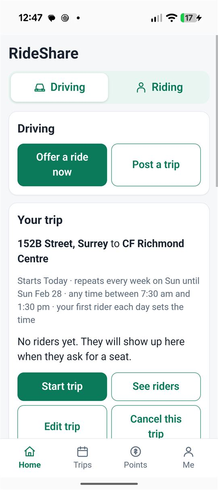
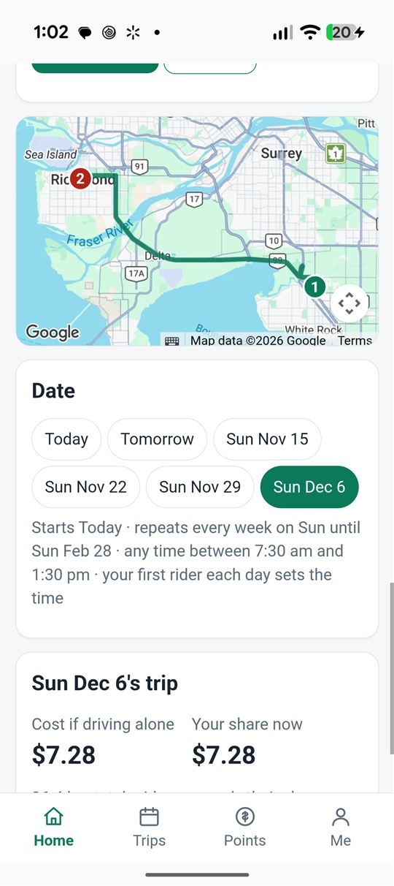
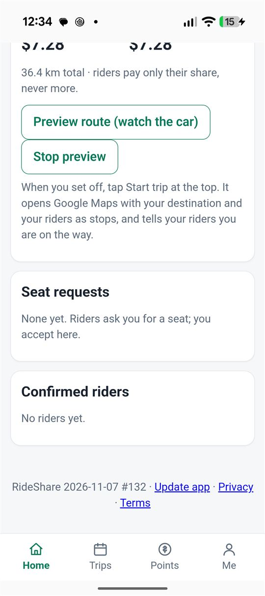
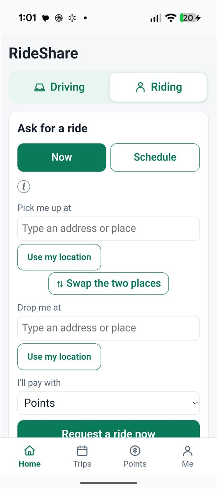
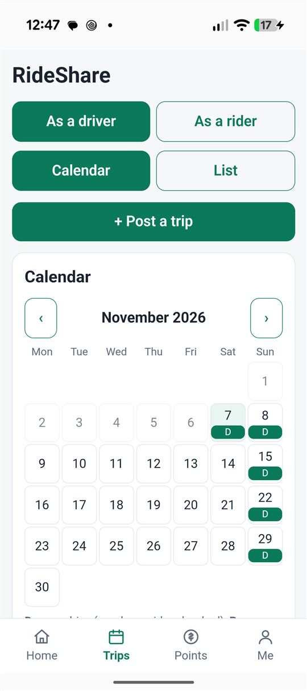
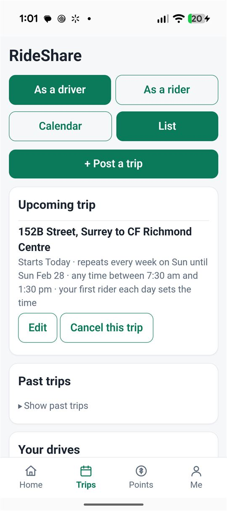
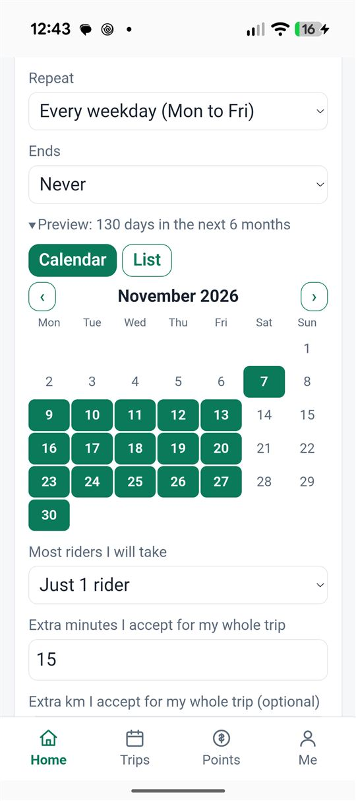

RideShare: what belongs on Home and what belongs on Trips?
A design brief for ChatGPT. Step 1: copy the prompt. Step 2: attach the 8 images (the screens folder, in numbered order: 7 phone screenshots, then the wireframe markup).
1. The prompt
I am building a small phone app and I am not a designer. I am confused about what belongs on the HOME tab and what belongs on the TRIPS tab. Please act as a senior mobile product designer and give me a clear, simple answer with wireframes.
THE APP
RideShare: a non-profit commuter carpool app for Metro Vancouver, on an Android phone (about 390 px wide). Nobody makes a profit: riders pay a small cost share in points (1 point is about $0.10) or cash. The same person is often BOTH a driver and a rider.
Driver: posts trips (one-time, repeating every day / weekdays / chosen weekdays / every 2 weeks / monthly like "last Thursday", with an end date or "after N times", sometimes a time window like "any time between 6 am and 12 pm, my first rider sets the time"). A driver can also tap "Offer a ride now" for a spur-of-the-moment drive. Up to 5 posted trips; a repeating trip can mean 10+ upcoming days. Riders ask for a seat; the driver accepts (or auto-accepts). Each day of a trip has: a leave time, a route on a Google map with pickup stops, a list of confirmed riders, and seat requests waiting for yes/no. On the day the driver taps "Start trip" (opens Google Maps navigation, tells the riders).
Rider: asks for a ride now or schedules one (one-time or repeating). Sees the booked driver, pickup time, can cancel. If a driver cancels: "Needs a new driver".
Tabs today: Home | Trips | Points | Me. Home has a switch at top: Driving | Riding. Trips has a switch As a driver | As a rider, and Calendar | List.
WHAT IS ON EACH SCREEN TODAY (see screenshots 1 to 7; image 8 is a wireframe markup of today's screens and of my starting idea)
Home, Driving: two buttons (Offer a ride now, Post a trip); a "Your trip" card for ONE selected trip (route, repeat info, Start trip, See riders, Edit trip, Cancel this trip); a "Cancel all upcoming" card; a Google map of the route for one chosen date; date chips (Today, Tomorrow, Sun Nov 15...) to switch the day; a trip plan for that day (leave time, stops, cost); Seat requests; Confirmed riders.
Home, Riding: the "Ask for a ride" form (Now or Schedule), then the rider's current ride.
Trips: Calendar (D = days I drive, R = days I ride; tap a day) or List (Upcoming trips with Edit/Cancel, Past trips, Your drives), plus + Post a trip.
Post a trip form: places, Time (Leave / Arrive / Flexible), Repeat, Ends, a collapsed "Preview the days" calendar/list.
MY PROBLEM
- I expected to stay mostly on Home and see my trips there. But Home shows only ONE trip at a time, while Trips holds "all the trips". I do not know where to look for the PLAN of a trip (map, leave time, stops, riders): Home or Trips?
- With 10 upcoming trips, where do I see them all? Should Trips be only past trips / history?
- Some information is in both places: duplicated and confusing.
- Too much text and too many cards stacked on Home: long and messy.
WHAT I NEED
1. A clear rule: what is Home for, what is Trips for? (e.g. "Home = what is happening now / next; Trips = everything scheduled plus history". Tell me if that is right or if there is a better split.)
2. Where does the trip plan live (map, leave time, stops, confirmed riders, seat requests)? Do not duplicate it.
3. How should it behave with 0 trips, 1 trip, 10+ trips (a repeating trip), and during a ride in progress?
4. Driver and rider: one shared structure or two? What about someone who is both?
5. Give 2 or 3 alternative layouts for Home and Trips (driver and rider) as simple text wireframes (boxes top to bottom, 390 px wide). Pick one and explain why in plain words.
6. Say exactly what to remove, merge or move from the current screens.
7. A short list of navigation changes (tabs, switches, what a tap on a trip opens).
RULES
- Simple, minimal text, big thumb-friendly buttons, nothing that needs a manual. No long paragraphs on screen.
- Calendar is good for seeing many days; lists should stay short or collapsed.
- The most important thing on Home is probably: what do I do next, and is anything waiting for my answer?
- Do not suggest many new features. This is about organizing what exists.
- Explain in plain English, not design jargon.
MY OWN STARTING IDEA (please critique it honestly)
- Home = "Next up": a hero card for the next trip or ride (date, leave time, route in one line, big Start trip button), a badge for seat requests waiting, the map and plan for that day, and a small "Coming up" strip of the next 3 days. Two buttons: Post a trip, Offer a ride now.
- Trips = everything: Calendar and List of all upcoming trips, filter Upcoming | Past. Tapping any trip opens a trip page with its plan, map, riders, Edit and Cancel.
- Riders get the same structure ("Next ride" on Home, all rides on Trips).
2. Screenshots from the phone (attach in this order)







3. Markup: how it is today
Red = confusing or duplicated. The same trip information shows in 3 places: the "Your trip" card on Home, the plan on Home, and the list on Trips.
HOME, Driving (today)
Driving | Riding
Offer a ride now
Post a trip
"Your trip" card (ONE trip only)
route, repeat text, Start trip, See riders, Edit, Cancel this trip
route, repeat text, Start trip, See riders, Edit, Cancel this trip
Only one trip: where are the others?
Cancel all upcoming
Google map
(for one chosen date)
(for one chosen date)
Date chips: TodayTomorrowSun 15Sun 22...
Plan of that day
leave time, stops, cost
leave time, stops, cost
Plan on Home...
Seat requests
Confirmed riders
HomeTripsPointsMe
TRIPS, Driver (today)
As a driver | As a rider
Calendar | List
+ Post a trip
Calendar
D on days I drive, R on days I ride
tap a day: its trip and riders
D on days I drive, R on days I ride
tap a day: its trip and riders
...and trips and riders again here
(List view) Upcoming trips
route, repeat text, Edit, Cancel this trip
route, repeat text, Edit, Cancel this trip
Past trips (collapsed)
Your drives
HomeTripsPointsMe
HOME, Riding (today)
Driving | Riding
"Ask for a ride" form (Now | Schedule)
pick up, drop off, pay with, Request
pick up, drop off, pay with, Request
The form is first, even if I already have a ride booked
My ride request / seat confirmed card
Drivers going my way (list)
HomeTripsPointsMe
4. Markup: my starting idea (for ChatGPT to critique)
Green = new or moved. Home answers "what do I do next?". Trips answers "show me everything".
HOME, Driving (idea)
Driving | Riding
Next up: Sun Nov 8
Leave 7:40 am
Surrey to Richmond Centre
2 riders confirmed
Leave 7:40 am
Surrey to Richmond Centre
2 riders confirmed
Start trip
2 seat requests waiting: Yes / No
Map of that day
Plan: stops and times
Coming up: Sun 15Sun 22Sun 29 › All trips
Post a trip
Offer a ride now
HomeTripsPointsMe
TRIPS (idea)
Driver | Rider
Upcoming | Past
Calendar | List
+ Post a trip
Calendar (D / R days)
tap a day: short list of that day
tap a day: short list of that day
List: one line per trip
Sun Nov 8 · 7:40 am · Surrey to Richmond · 2 riders
(tap opens the trip page)
Sun Nov 8 · 7:40 am · Surrey to Richmond · 2 riders
(tap opens the trip page)
HomeTripsPointsMe
TRIP PAGE (idea): opened from Trips or "Coming up"
Sun Nov 8, 7:40 am
Surrey to Richmond Centre
Surrey to Richmond Centre
Map
Plan: stops and times
Confirmed riders
Seat requests: Yes / No
Edit
Skip this day
Cancel this trip
confusing / duplicatednew or movedmain button